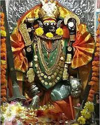

Images Of GarhKali


माँ गढ़काली माँ काली का तांत्रिक स्वरूप है |
माँ गढ़काली काली हिन्दू धर्म की एक प्रमुख देवी हैं। यह सुन्दरी रूप वाली भगवती दुर्गा का काला और भयप्रद रूप है, जिसकी उत्पत्ति राक्षसों को मारने के लिये हुई थी। उनको ख़ासतौर पर बंगाल, ओडिशा और असम में पूजा जाता है। काली की व्युत्पत्ति काल अथवा समय से हुई है जो सबको अपना ग्रास बना लेता है। माँ का यह रूप है जो नाश करने वाला है पर यह रूप सिर्फ उनके लिए हैं जो दानवीय प्रकृति के हैं जिनमे कोई दयाभाव नहीं है। यह रूप बुराई से अच्छाई को जीत दिलवाने वाला है अत: माँ काली अच्छे मनुष्यों की शुभेच्छु है और पूजनीय है। इनको महाकाली भी कहते हैं।
मां गढ़काली महाकवि कालिदास जी की अधिष्ठात्री देवी हैं|
मां गढ़कालिका को ज्ञान की देवी भी कह सकते हैं जिन्होंने महाकवि कालिदास जी के जीवन में ज्ञान का दीपक जलाया और उन्हें अपना आशीर्वाद देकर के विश्व विख्यात किया इसलिए इनका पूजन ज्ञान की अधिष्ठात्री देवी के रूप में भी किया जाता है |
मां गढ़कालिका ज्ञान की देवी तो है ही अपितु तंत्र मंत्र और भी अन्य कलाओं की देवी हैं जिस प्रकार गढ़कालिका अर्थात ऊंचे स्थान की देवी काली जिससे काल भी स्वयं डरता है |
माँ गढ़काली के प्रसिद्ध पीठ
कुछ विद्धवानो और योगियो के अनुसार माँ गढ़काली के 7 सिद्धपीठ सम्पूर्णा भारत मे स्थित है |जिनमे से कुछ मंदिर आज तक गुप्त है | माँ गढ़काली का सबसे प्रसिद्द मंदिर है , जोकि मध्यप्रदेश के उज्जैन मे स्थित है|
मेघदूतम से यह लगता है महाकवि कालिदास जी ने भारत भ्रमण अवश्य किया होगा क्योंकि उसमें नर्मदा आदि नदियों का उल्लेख मिलता है इसलिए हम कह सकते हैं की महाकवि कालिदास जबलपुर जवालीपुरम नगरी में अवश्य आए होंगे

MO. 9589172022
माँ के भक्तो की लिये जानकरिया जिस्से भक्त माँ गढ़काली के सँधारभ मे जानकारी ले सक्ते हैं